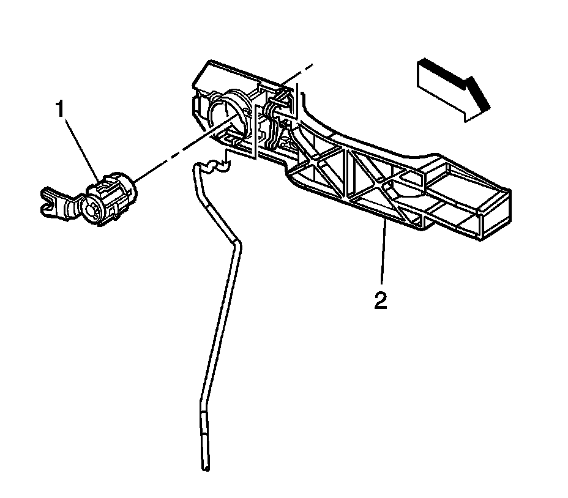

Door Lock Cylinder: Service and Repair
Door Lock Cylinder Replacement
Removal Procedure

Important: Do not attempt repairs in order to correct lock cylinder discrepancies. Replace the lock cylinder.
1. Remove the front door outside door handle. Refer to Front Side Door Outside Handle Replacement (Service and Repair) .
2. Remove the lock cylinder retainer clip (1).
3. Remove the lock cylinder from the outside door handle housing (2).
Installation Procedure
1. Install the lock cylinder to the outside door handle housing (2).
2. Install the lock cylinder retainer clip (1).
3. Install the front door outside door handle. Refer to Front Side Door Outside Handle Replacement (Service and Repair) .